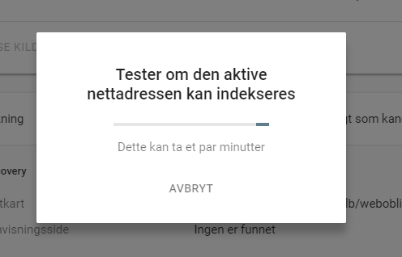
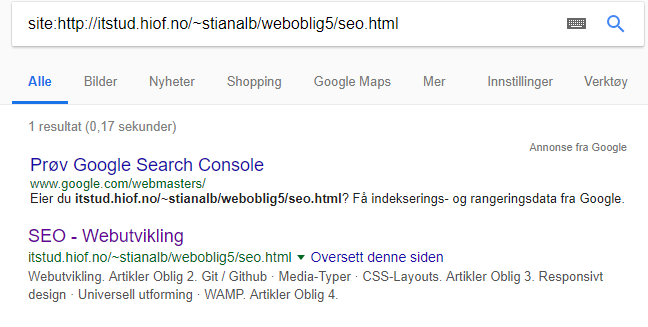

Søkemotoroptimalisering, eller SEO, går ut på å komme først i køen i googles søketreff, noe som naturligvis
er veldig viktig med tanke på at en stor andel av trafikken går igjennom søkemotorer. SEO er ikke noe
som er gjort på noen timer, men er en lang prosess som gjerne strekker seg over måneder eller år. Derfor
skal jeg gå igjennom hvordan jeg kommer i gang med SEO for dette nettstedet, men jeg kommer ikke til å
vise til vesentlige resultater.
Fremgangsmåten
Det første jeg gjør er å registrere nettstedet i Google Search Console
og bekrefte eierskap ved å legge til en html-fil, generert av google, i root mappen.
Kort tid etter, kan google bekrefte at jeg er eier av nettstedet.
Samtidig sender google en epost med tips for å komme i gang, blandt annet en anbefaling om å legge til et nettstedskart.
Jeg brukte en sidekartsgenerator for å lage sidekartet i .xml format
og lagret dette i root mappen på serveren.
Når .xml filen ligger på serveren, er det bare å gi google adressen til filen, så har du lagt til et sidekart.
.xml filens innhold er på dette formatet.
Det er ganske lett å sjekke om en side er indeksert av google. Dette gjøres ved å google "site:"
etterfulgt av domenet du vil sjekke. Eksempelvis "site:https://webutvikling.ninja/" som vil
gi resultatene over.
Etter et raskt Google-søk finner jeg ut at siden min ikke er indeksert. Dette kan fikses ved å
spørre Google pent om de kan indeksere siden ved å trykke på "be om indeksering" som vist på
bildet over.

Google tester så om siden kan indekseres.
Hvis testen over ikke feiler, legges siden til i en prioritert kø for indeksering og det er bare å vente.
Responsivitet er også noe som er en økende viktighet for SEO. Derfor har Google Search Console et eget
verktøy for å sjekke om siden din er optimalisert for mobil.
Neste dag

Allerede dagen etter jeg ba om indeksering er alle undersidene mine indeksert. Jeg la forøvrig
merke til noe som ikke er helt optimalt. Teksten under søketreffet lister opp menyen på siden.
Dette er nå løst ved å legge til en <meta> med innholdsinformasjon og vil bli oppdatert
ved neste indeksering.
<meta name="description" content="Prosjekt i webutvikling ved Høyskolen i Østfold. Artikkel om søkemotoroptimalisering.">
Nøkkelord
Nøkkelord er et annet viktig aspekt ved SEO (søkemotoroptimalisering). Som du kan se på denne siden
forekommer nøkkelord som "SEO", "søkemotoroptimalisering", "indeksere", "indeksering" og "indeksert"
flere ganger. Men kun der det er naturlig. Dette har den effekt at det er mer sannsynlig at denne
siden dukker opp som søketreff når brukere søker på disse ordene. Nøkkelord har ikke like mye betydning
for SEO som før, men er fortsatt viktig å tenke på når innholdet produseres. "Hva vil brukerne søke på
for å finne informasjon om dette emnet?". Det er dog særdeles viktig å ikke bare liste opp en haug med
nøkkelord, men de må komme naturlig i innholdet. En liste med nøkkelord vil straffes av google og siden
vil i verste fall ikke indekseres.

{kind=link}
{kind=link}
{kind=link}
{kind=link}
{kind=link}
{kind=link}
{kind=link}
{kind=link}
{kind=link}
{kind=link}
{kind=link}
{kind=link}